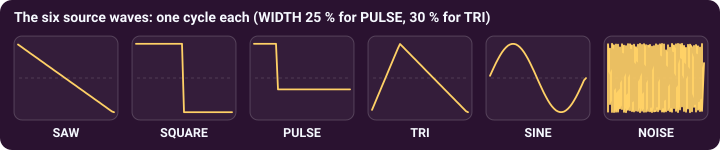
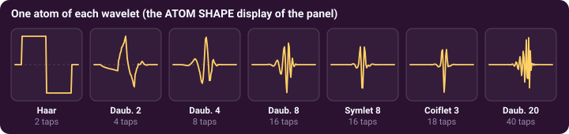
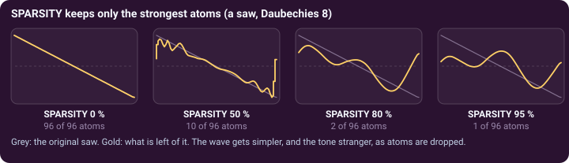

Subtractive synthesis with wavelets · page 1 of 3 · oscillators A1 and A2
The oscillator: a wave cut into atoms
A classic subtractive synthesizer starts from a rich wave and takes away what it does not want. OktoWave does the same, but first it cuts the wave into wavelet atoms.
Start from a classic wave
The WAVE buttons of the WAVELET · SUBTRACTIVE card choose the starting wave: SAW, SQUARE, PULSE, TRI, SINE or NOISE; MORE ▾ opens 20 more, after the classic subtractive synthesizers (version 1.0.17): Half Sine, Abs Sine, Saw+Square, Shark Fin, Trapezoid, Parabola, Stepped Saw and Sine, three hard-synced waves (Sync Saw 2.5 and 4.3, Sync Square 3.5), Octave Saw, Clipped Sine, three FM waves (1:1, 2:1, 3:1), Formant, Reso Saw, Organ and Saw Stack. One cycle of it, 2048 numbers, is what the oscillator holds; the SOURCE CYCLE display draws it.

- WIDTH sets the width of the PULSE and the peak position of the TRI (it is greyed out for the other waves).
- PHASE starts the cycle later. Alone it changes nothing you hear. But the cut into atoms is not the same from another starting point, so the atoms that the filter, SPARSITY and the window act on change: PHASE is a timbre knob, and a target for the LFOs.
- NOISE is the same noise cycle on every note, so a key always sounds the same.
Cut it with a wavelet
WAVELET chooses the atom, among seven; the ATOM SHAPE display draws one. Cutting and putting back loses nothing, so with every atom kept and no filter, any wavelet gives the same wave. The choice only shows once atoms are removed or bands are turned down (see the next page).

Keep the strongest atoms
SPARSITY drops the weakest atoms and keeps the strongest. At 0 % all are kept; at 100 % only one. The SOURCE CYCLE display says how many are left (for example 104 / 2047 ATOMS KEPT). The knob works over its whole range whatever the wave and the wavelet. On NOISE, SPARSITY turns a hiss into a texture of separate grains (A · Noise Wash Pad uses 24 %).

Two wavelets and a morph
WAVELET 2 is a second wavelet, and MORPH slides from the sound cut with WAVELET (0 %) to the sound cut with WAVELET 2 (100 %). The morph can move on its own: ENV>WAV makes the MOD ENVELOPE push it at every note, and the LFOs can sweep it.
Try it. Load A · Wave Brass: Daubechies 20, a MORPH of 35 % and an ENV>WAV of 65 %, so that each note travels towards the second wavelet (Haar). Then change WAVELET and listen to the same filter colouring the wave differently. The level knob of the card (OS1 for A1, OS2 for A2) is the same as in OSC MIX.